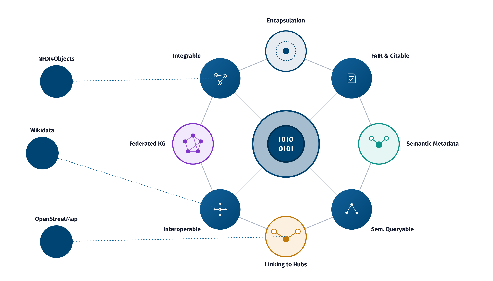

The FDO sphere and the community hubs
The eight pictograms around the FDO sphere, with and without the community hubs.

SH.1The FDO sphere, variant A: the eight badges as a ring around the FDO sphere.
FDOx-squirrel, fdox-visuals (Florian Thiery, LEIZA). Code: MIT licence.


SH.2The FDO sphere, variant B: the same ring, with dotted links to the community hubs NFDI4Objects, Wikidata and OpenStreetMap.
FDOx-squirrel, fdox-visuals (Florian Thiery, LEIZA). Code: MIT licence.